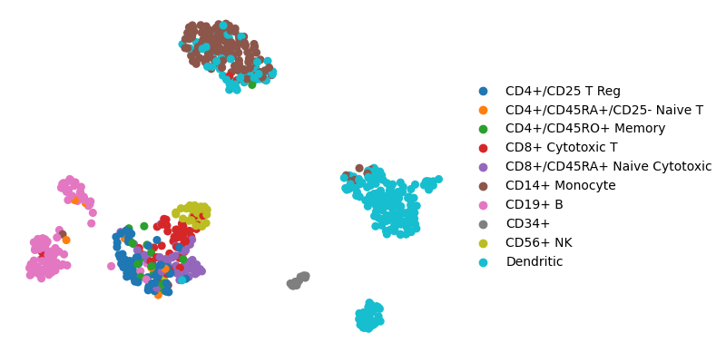
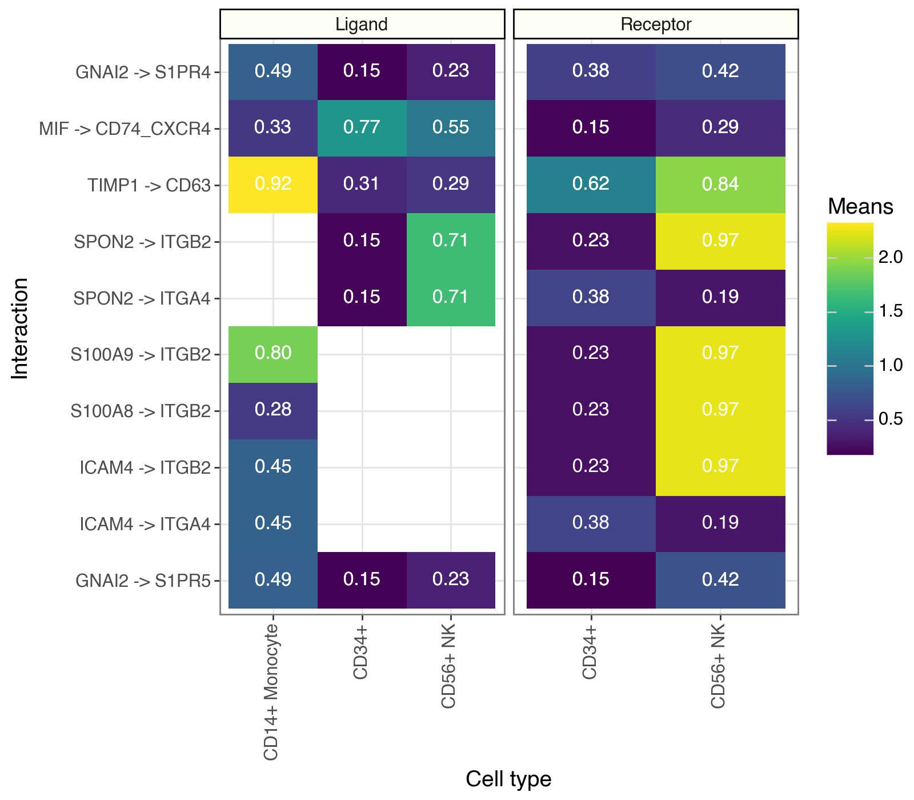
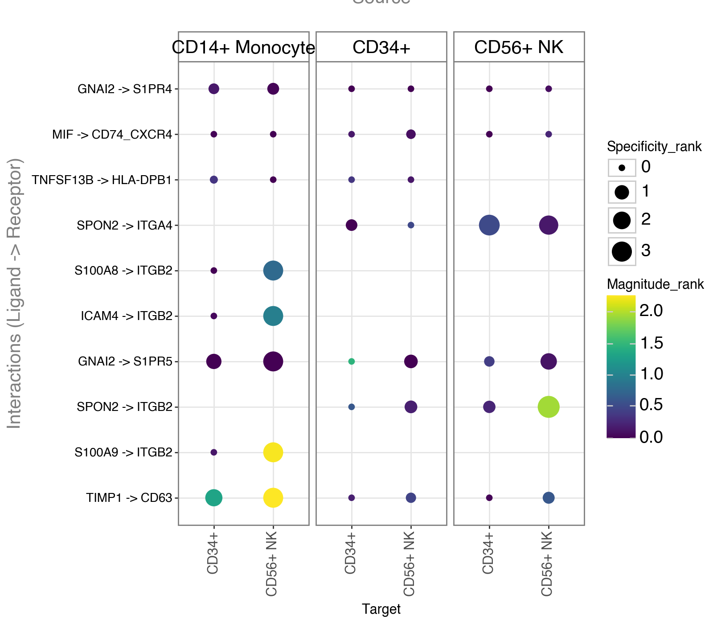
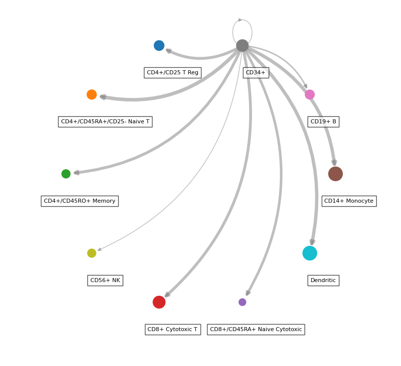

Ligand-Receptor Analysis#
liana provides different statistical methods to infer ligand-receptor interactions from single-cell transcriptomics data omics data using prior knowledge.
In this notebook we showcase how to use liana in its most basic form with toy data.
Loading Packages#
# import liana
import liana as li
# needed for visualization and toy data
import scanpy as sc
OMP: Info #276: omp_set_nested routine deprecated, please use omp_set_max_active_levels instead.
Loading data#
In the most general case, liana’s ligand-receptor methods use anndata objects with processed single-cell transcriptomics data, with pre-defined cell labels (identities), to infer ligand-receptor interactions among all pairs of cell identities.
adata = sc.datasets.pbmc68k_reduced()
The example single-cell data consists processed data with PBMCs cell types
sc.pl.umap(adata, color='bulk_labels', title='', frameon=False)

Background#
liana typically works with the log1p-trasformed counts matrix, in this object the normalized counts are stored in raw:
adata.raw.X
<700x765 sparse matrix of type '<class 'numpy.float32'>'
with 174400 stored elements in Compressed Sparse Row format>
Preferably, one would use liana with all features (genes) for which we have enough counts, but for the sake of this tutorial we are working with a matrix pre-filtered to the variable features alone.
In the background, liana aggregates the counts matrix and generates statistics, typically related to cell identies.
These statistics are then utilized by each of the methods in liana.
Methods#
li.mt.show_methods()
| Method Name | Magnitude Score | Specificity Score | Reference | |
|---|---|---|---|---|
| 0 | CellPhoneDB | lr_means | cellphone_pvals | Efremova, M., Vento-Tormo, M., Teichmann, S.A.... |
| 0 | Connectome | expr_prod | scaled_weight | Raredon, M.S.B., Yang, J., Garritano, J., Wang... |
| 0 | log2FC | None | lr_logfc | Dimitrov, D., Türei, D., Garrido-Rodriguez, M.... |
| 0 | NATMI | expr_prod | spec_weight | Hou, R., Denisenko, E., Ong, H.T., Ramilowski,... |
| 0 | SingleCellSignalR | lrscore | None | Cabello-Aguilar, S., Alame, M., Kon-Sun-Tack, ... |
| 0 | Rank_Aggregate | magnitude_rank | specificity_rank | Dimitrov, D., Türei, D., Garrido-Rodriguez, M.... |
| 0 | Geometric Mean | lr_gmeans | gmean_pvals | CellPhoneDBv2's permutation approach applied t... |
| 0 | scSeqComm | inter_score | None | Baruzzo, G., Cesaro, G., Di Camillo, B. 2022. ... |
| 0 | CellChat | lr_probs | cellchat_pvals | Jin, S., Guerrero-Juarez, C.F., Zhang, L., Cha... |
Each method infers relevant ligand-receptor interactions relying on different assumptions and each method returns different ligand-receptor scores, typically a pair per method. One score corresponding to
the magnitude (strength) of interaction and the other reflecting how specificity of a given interaction to a pair cell identities.
For example, if the user wishes to learn more about liana’s rank_aggregate implementation, where we combine the scores of multiple methods, they could do the following:
# import liana's rank_aggregate
from liana.mt import rank_aggregate
rank_aggregate.describe()
Rank_Aggregate returns `magnitude_rank`, `specificity_rank`. magnitude_rank and specificity_rank respectively represent an aggregate of the `magnitude`- and `specificity`-related scoring functions from the different methods.
By default, LIANA+ uses human gene symbols. See the documentation and the Prior Knowledge vignette for details and instructions for homology conversion.#
Example Run#
Individual Methods#
# import all individual methods
from liana.method import singlecellsignalr, connectome, cellphonedb, natmi, logfc, cellchat, geometric_mean
Note
LIANA will by default use the .raw attribute of AnnData. If you wish to use .X set use_raw to False, or specify a layer.
LIANA will also by default use the ‘consensus’ resource to infer ligand-receptor interactions. This resource was created as a consensus from the resources literature-curated resources in OmniPath, and uses human gene symbols.
For different species, we provide ‘mouseconsensus’, for any other species you can provide your own resource, or translate LIANA’s resources as shown here.
If you wish to use a different resource, please specify it via the resource_name parameter for internal resources, or provide an external one via resource or interactions.
# run cellphonedb
cellphonedb(adata,
groupby='bulk_labels',
# NOTE by default the resource uses HUMAN gene symbols
resource_name='consensus',
expr_prop=0.1,
verbose=True, key_added='cpdb_res')
Using resource `consensus`.
Using `.raw`!
/Users/sara.jimenez/miniconda3/envs/workshop_2025/lib/python3.10/site-packages/anndata/_core/anndata.py:381: FutureWarning: The dtype argument is deprecated and will be removed in late 2024.
/Users/sara.jimenez/miniconda3/envs/workshop_2025/lib/python3.10/site-packages/liana/method/_pipe_utils/_pre.py:153: FutureWarning: The default of observed=False is deprecated and will be changed to True in a future version of pandas. Pass observed=False to retain current behavior or observed=True to adopt the future default and silence this warning.
0.94 of entities in the resource are missing from the data.
Generating ligand-receptor stats for 700 samples and 43 features
100%|██████████| 1000/1000 [00:02<00:00, 473.07it/s]
By default, liana will be run inplace and results will be assigned to adata.uns['liana_res'].
Note that the high proportion of missing entities here is expected, as we are working on the reduced dimensions data.
# by default, liana's output is saved in place:
adata.uns['cpdb_res'].head()
| ligand | ligand_complex | ligand_means | ligand_props | receptor | receptor_complex | receptor_means | receptor_props | source | target | lr_means | cellphone_pvals | |
|---|---|---|---|---|---|---|---|---|---|---|---|---|
| 482 | HLA-DRA | HLA-DRA | 4.537684 | 0.995833 | CD4 | CD4 | 0.612842 | 0.421053 | Dendritic | CD4+/CD45RO+ Memory | 2.575263 | 0.0 |
| 321 | HLA-DRA | HLA-DRA | 4.537684 | 0.995833 | CD4 | CD4 | 0.596125 | 0.500000 | Dendritic | CD4+/CD45RA+/CD25- Naive T | 2.566905 | 0.0 |
| 989 | HLA-DRA | HLA-DRA | 4.537684 | 0.995833 | CD4 | CD4 | 0.483977 | 0.302326 | Dendritic | CD14+ Monocyte | 2.510830 | 0.0 |
| 651 | HLA-DRA | HLA-DRA | 4.537684 | 0.995833 | LAG3 | LAG3 | 0.399500 | 0.240741 | Dendritic | CD8+ Cytotoxic T | 2.468592 | 0.0 |
| 1392 | HLA-DRA | HLA-DRA | 4.537684 | 0.995833 | CD4 | CD4 | 0.373671 | 0.270833 | Dendritic | Dendritic | 2.455678 | 0.0 |
Here, we see that stats are provided for both ligand and receptor entities, more specifically: ligand and receptor are the two entities that potentially interact. As a reminder, CCC events are not limited to secreted signalling, but we refer to them as ligand and receptor for simplicity.
Also, in the case of heteromeric complexes, the ligand and receptor columns represent the subunit with minimum expression, while *_complex corresponds to the actual complex, with subunits being separated by _.
sourceandtargetcolumns represent the source/sender and target/receiver cell identity for each interaction, respectively*_props: represents the proportion of cells that express the entity.By default, any interactions in which either entity is not expressed in above 10% of cells per cell type is considered as a false positive, under the assumption that since CCC occurs between cell types, a sufficient proportion of cells within should express the genes.
*_means: entity expression mean per cell typelr_means: mean ligand-receptor expression, as a measure of ligand-receptor interaction magnitudecellphone_pvals: permutation-based p-values, as a measure of interaction specificity
Note
ligand, receptor, source, and target columns are returned by every ligand-receptor method, while the rest of the columns can vary across the ligand-receptor methods, as each method infers relies on different assumptions and scoring functions, and hence each returns different ligand-receptor scores. Nevertheless, typically most methods use a pair of scoring functions - where one often corresponds to the magnitude (strength) of interaction and the other reflects how specificity of a given interaction to a pair cell identities.
Dotplot#
We can now visualize the results that we just obtained.
LIANA provides some basic, but flexible plotting functionalities. Here, we will generate a dotplot of relevant ligand-receptor interactions.
li.pl.dotplot(adata = adata,
colour='lr_means',
size='cellphone_pvals',
inverse_size=True, # we inverse sign since we want small p-values to have large sizes
source_labels=['CD34+', 'CD56+ NK', 'CD14+ Monocyte'],
target_labels=['CD34+', 'CD56+ NK'],
figure_size=(8, 7),
# finally, since cpdbv2 suggests using a filter to FPs
# we filter the pvals column to <= 0.05
filter_fun=lambda x: x['cellphone_pvals'] <= 0.05,
uns_key='cpdb_res' # uns_key to use, default is 'liana_res'
)
{kind=link}
Note
Missing dots here would represent interactions for which the ligand and receptor are not expressed above the expr_prop. One can change this threshold by setting expr_prop to a different value. Alternatively, setting return_all_lrs to True will return all ligand-receptor interactions, regardless of expression.
Tileplot#
While dotplots are useful to visualize the most relevant interactions, LIANA’s tileplots are more useful when visualizing the statistics of ligands and receptors, individually.
my_plot = li.pl.tileplot(adata = adata,
# NOTE: fill & label need to exist for both
# ligand_ and receptor_ columns
fill='means',
label='props',
label_fun=lambda x: f'{x:.2f}',
top_n=10,
orderby='cellphone_pvals',
orderby_ascending=True,
source_labels=['CD34+', 'CD56+ NK', 'CD14+ Monocyte'],
target_labels=['CD34+', 'CD56+ NK'],
uns_key='cpdb_res', # NOTE: default is 'liana_res'
source_title='Ligand',
target_title='Receptor',
figure_size=(8, 7)
)
my_plot
/Users/sara.jimenez/miniconda3/envs/workshop_2025/lib/python3.10/site-packages/liana/plotting/_common.py:107: SettingWithCopyWarning:
A value is trying to be set on a copy of a slice from a DataFrame.
Try using .loc[row_indexer,col_indexer] = value instead
See the caveats in the documentation: https://pandas.pydata.org/pandas-docs/stable/user_guide/indexing.html#returning-a-view-versus-a-copy
{kind=link}

Rank Aggregate#
In addition to the individual methods, LIANA also provides a consensus that integrates the predictions of individual methods. This is done by ranking and aggregating (RRA) the ligand-receptor interaction predictions from all methods.
# Run rank_aggregate
li.mt.rank_aggregate(adata,
groupby='bulk_labels',
resource_name='consensus',
expr_prop=0.1,
verbose=True)
Using resource `consensus`.
Using `.raw`!
/Users/sara.jimenez/miniconda3/envs/workshop_2025/lib/python3.10/site-packages/anndata/_core/anndata.py:381: FutureWarning: The dtype argument is deprecated and will be removed in late 2024.
/Users/sara.jimenez/miniconda3/envs/workshop_2025/lib/python3.10/site-packages/liana/method/_pipe_utils/_pre.py:153: FutureWarning: The default of observed=False is deprecated and will be changed to True in a future version of pandas. Pass observed=False to retain current behavior or observed=True to adopt the future default and silence this warning.
0.94 of entities in the resource are missing from the data.
/Users/sara.jimenez/miniconda3/envs/workshop_2025/lib/python3.10/site-packages/liana/method/sc/_liana_pipe.py:262: ImplicitModificationWarning: Setting element `.layers['scaled']` of view, initializing view as actual.
Generating ligand-receptor stats for 700 samples and 43 features
Assuming that counts were `natural` log-normalized!
Running CellPhoneDB
100%|██████████| 1000/1000 [00:01<00:00, 516.73it/s]
Running Connectome
Running log2FC
Running NATMI
Running SingleCellSignalR
adata.uns['liana_res'].head()
| source | target | ligand_complex | receptor_complex | lr_means | cellphone_pvals | expr_prod | scaled_weight | lr_logfc | spec_weight | lrscore | specificity_rank | magnitude_rank | |
|---|---|---|---|---|---|---|---|---|---|---|---|---|---|
| 1209 | Dendritic | CD4+/CD45RO+ Memory | HLA-DRA | CD4 | 2.575263 | 0.0 | 2.780884 | 0.723815 | 1.431302 | 0.065077 | 0.736772 | 0.001137 | 0.000653 |
| 1188 | Dendritic | CD4+/CD45RA+/CD25- Naive T | HLA-DRA | CD4 | 2.566905 | 0.0 | 2.705027 | 0.709428 | 1.332656 | 0.063302 | 0.734081 | 0.001137 | 0.000911 |
| 1210 | Dendritic | CD4+/CD45RO+ Memory | HLA-DRB1 | CD4 | 2.415010 | 0.0 | 2.584465 | 0.712731 | 1.331341 | 0.060203 | 0.729607 | 0.001137 | 0.001211 |
| 1205 | Dendritic | CD4+/CD45RO+ Memory | HLA-DPB1 | CD4 | 2.367473 | 0.0 | 2.526199 | 0.731297 | 1.447014 | 0.068953 | 0.727352 | 0.001137 | 0.001377 |
| 1189 | Dendritic | CD4+/CD45RA+/CD25- Naive T | HLA-DRB1 | CD4 | 2.406652 | 0.0 | 2.513965 | 0.698344 | 1.232695 | 0.058561 | 0.726870 | 0.001137 | 0.001741 |
rank_aggregate.describe()
Rank_Aggregate returns `magnitude_rank`, `specificity_rank`. magnitude_rank and specificity_rank respectively represent an aggregate of the `magnitude`- and `specificity`-related scoring functions from the different methods.
The remainder of the columns in this dataframe are those coming from each of the methods included in the rank_aggregate - i.e. see the show_methods to map methods to scores.
Dotplot#
We will now plot the most ‘relevant’ interactions ordered to the magnitude_rank results from aggregated_rank.
li.pl.dotplot(adata = adata,
colour='magnitude_rank',
size='specificity_rank',
inverse_size=True,
inverse_colour=True,
source_labels=['CD34+', 'CD56+ NK', 'CD14+ Monocyte'],
target_labels=['CD34+', 'CD56+ NK'],
top_n=10,
orderby='magnitude_rank',
orderby_ascending=True,
figure_size=(8, 7)
)
/Users/sara.jimenez/miniconda3/envs/workshop_2025/lib/python3.10/site-packages/liana/plotting/_common.py:107: SettingWithCopyWarning:
A value is trying to be set on a copy of a slice from a DataFrame.
Try using .loc[row_indexer,col_indexer] = value instead
See the caveats in the documentation: https://pandas.pydata.org/pandas-docs/stable/user_guide/indexing.html#returning-a-view-versus-a-copy
{kind=link}

Similarly, we can also treat the ranks provided by RRA as a probability distribution to which we can filter interactions
according to how robustly and highly ranked they are across the different methods.
my_plot = li.pl.dotplot(adata = adata,
colour='magnitude_rank',
inverse_colour=True,
size='specificity_rank',
inverse_size=True,
source_labels=['CD34+', 'CD56+ NK', 'CD14+ Monocyte'],
target_labels=['CD34+', 'CD56+ NK'],
filter_fun=lambda x: x['specificity_rank'] <= 0.01,
)
my_plot
{kind=link}
Circle Plot#
While the majority of liana’s plots are in plotnine, thanks to @WeipengMo, we also provide a circle plot (drawn in networkx):
li.pl.circle_plot(adata,
groupby='bulk_labels',
score_key='magnitude_rank',
inverse_score=True,
source_labels='CD34+',
filter_fun=lambda x: x['specificity_rank'] <= 0.05,
pivot_mode='counts', # NOTE: this will simply count the interactions, 'mean' is also available
figure_size=(10, 10),
)
<Axes: >

Customizing LIANA’s rank aggregate#
LIANA’s rank aggregate is also customizable, and the user can choose to include only a subset of the methods.
For example, let’s generate a consensus with geometric mean and logfc methods only:
methods = [logfc, geometric_mean]
new_rank_aggregate = li.mt.AggregateClass(li.mt.aggregate_meta, methods=methods)
new_rank_aggregate(adata,
groupby='bulk_labels',
expr_prop=0.1,
verbose=True,
# Note that with this option, we don't perform permutations
# and hence we exclude the p-value for geometric_mean, as well as specificity_rank
n_perms=None,
use_raw=True,
)
Using resource `consensus`.
Using `.raw`!
/Users/sara.jimenez/miniconda3/envs/workshop_2025/lib/python3.10/site-packages/anndata/_core/anndata.py:381: FutureWarning: The dtype argument is deprecated and will be removed in late 2024.
/Users/sara.jimenez/miniconda3/envs/workshop_2025/lib/python3.10/site-packages/liana/method/_pipe_utils/_pre.py:153: FutureWarning: The default of observed=False is deprecated and will be changed to True in a future version of pandas. Pass observed=False to retain current behavior or observed=True to adopt the future default and silence this warning.
0.94 of entities in the resource are missing from the data.
/Users/sara.jimenez/miniconda3/envs/workshop_2025/lib/python3.10/site-packages/liana/method/sc/_liana_pipe.py:272: ImplicitModificationWarning: Setting element `.layers['normcounts']` of view, initializing view as actual.
Generating ligand-receptor stats for 700 samples and 43 features
Assuming that counts were `natural` log-normalized!
Running log2FC
Running Geometric Mean
Check the results
adata.uns['liana_res'].head()
| source | target | ligand_complex | receptor_complex | lr_logfc | lr_gmeans | magnitude_rank | |
|---|---|---|---|---|---|---|---|
| 110 | CD14+ Monocyte | CD56+ NK | TIMP1 | CD63 | 1.435273 | 2.126363 | 0.000776 |
| 109 | CD14+ Monocyte | CD56+ NK | S100A9 | ITGB2 | 1.069681 | 2.048953 | 0.001553 |
| 20 | CD14+ Monocyte | CD14+ Monocyte | S100A9 | ITGB2 | 1.069747 | 1.979753 | 0.002329 |
| 838 | CD56+ NK | CD56+ NK | SPON2 | ITGB2 | 1.860055 | 1.926317 | 0.003106 |
| 782 | CD56+ NK | CD14+ Monocyte | SPON2 | ITGB2 | 1.860121 | 1.861258 | 0.003882 |
Task#
Run different methods separately and then aggregate them. How different are the results?
Advance task#
How can you combine GSEA with LRI?
Run GSEA limiting to the collection of KEGG pathways